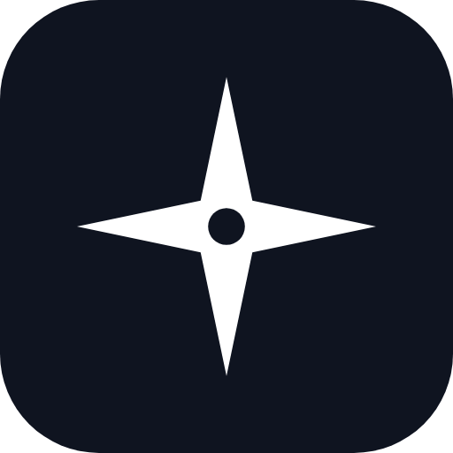
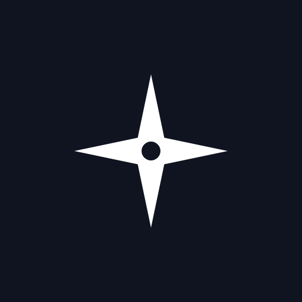

人生にも、経営戦略を。
Personal Strategy OS — 目標・決断・人脈・学び・振り返りをつなげて、「本当に前へ進んでいるか」を見えるようにする。
朝 5 分：今日の One Thing を決める
移動中：スマホから Quick Capture
会う前：People の Brief を見る
週末：CEO Meeting with Yourself
専門機能: Goal Hierarchy / Decision Journal / Weekly・Monthly・Quarterly Review / Personal CRM / Knowledge Graph / Full-text Search / Semantic Search / AI Chief of Staff / RAG / Connector Architecture / MCP / PWA / Privacy Controls


Wordmark: Inter（SIL OFL 1.1）/ Mark: 方位・進む方向を抽象化した 8 方位の星。写真・写実的な星空は使わない。modern / premium / quiet / intelligent。